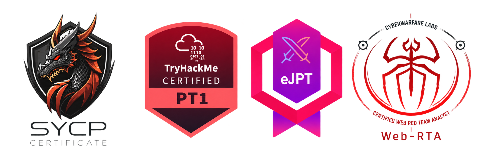

01
Pentest Web
Avaliação de aplicações web, autenticação, controle de acesso e lógica de negócio.
APLICAÇÕESPentest Web, API e infraestrutura para empresas que precisam validar seus riscos de forma objetiva.
Converse sobre seu ambienteEscopo claro. Execução técnica. Resultados objetivos.
01 / SERVIÇOS
Avaliação de aplicações web, autenticação, controle de acesso e lógica de negócio.
APLICAÇÕESTestes nos endpoints e fluxos de integração, com foco em autorização e exposição de dados.
INTEGRAÇÕESAvaliação dos ativos, serviços e configurações de rede definidos no escopo do projeto.
AMBIENTESVerificação das correções dos achados, com registro do que foi resolvido e do que permanece.
CORREÇÕES02 / COMO TRABALHAMOS
Um processo definido do primeiro alinhamento ao reteste.
Alinhamos ativos, objetivos, limites e prazos do trabalho.
Registramos a permissão para testar e as regras de engajamento.
Realizamos os testes dentro do escopo e documentamos as evidências.
Apresentamos os achados, seus impactos e recomendações de correção.
Validamos as correções conforme as condições acordadas no projeto.
03 / O QUE VOCÊ RECEBE
Evidências reproduzíveis, classificação de severidade, impacto, recomendações de correção e reteste dos achados.
Da evidência à validação da correção.04 / CREDENCIAIS
Profissionais certificados e com experiência prática em segurança ofensiva e AppSec.
SYCP · PT1 · eJPTv2 · Web-RTA

Credencial da equipe
Credencial da equipe
Credencial da equipe
Credencial da equipe
05 / VAMOS CONVERSAR
Conte o que você precisa avaliar. Nós ajudamos a definir o escopo.